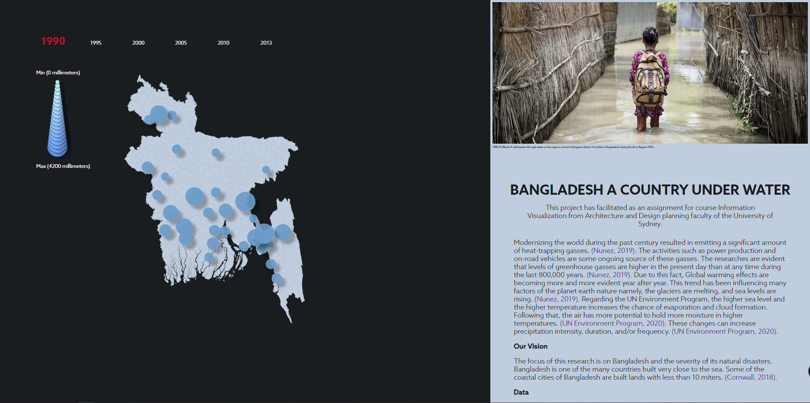
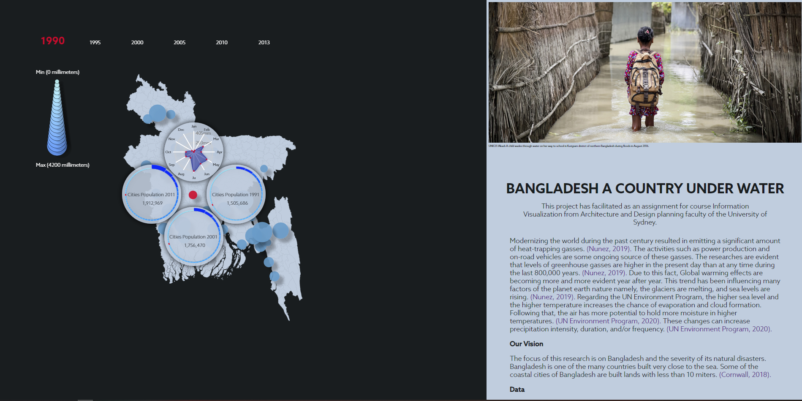

UNICEF/Akash A child wades through water on her way to school in Kurigram district of northern Bangladesh during floods in August 2016.
Bangladesh a Country under water
This project has facilitated as an assignment for course Information Visualization from Architecture and Design planning faculty of the University of Sydney.
This project is programmed in D3.js which is a very powerful JavaScript library for visualizing data sets and data mining.
The focus of this research is on Bangladesh and the severity of its natural disasters. Bangladesh is one of the many countries built very close to the sea. Some of the coastal cities of Bangladesh are built on lands with less than 10 miters high from the sea level. (Cornwall, 2018).. this fact has increased the level of vulnerability of these cities against the extreme climate change resulted from Global Warming.
Modernizing the world during the past century has resulted in the emission of a significant amount of heat-trapping gasses. (Nunez, 2019). . Activities such as power production and on-road vehicles are some of the ongoing sources of these gasses. From current research, it is evident that levels of greenhouse gasses are higher in the present day than at any time during the last 800,000 years. (Nunez, 2019). Due to this fact, Global warming effects are becoming more and more evident year after year. This trend has been influencing many factors of planet earth’s nature namely, the glaciers are melting, and sea levels are rising. (Nunez, 2019). The UN Environment Program advises that the higher sea level and the higher temperatures increase the chance of evaporation and cloud formation. Following that, the air has more potential to hold more moisture in higher temperatures. (UN Environment Program, 2020). These changes can increase precipitation intensity, duration, and/or frequency.
With our visualization, we aimed to provide information on Bangladesh’s extreme weather and how that influences migration between cities over time. Not only does it affect migration, but we also hope to highlight how other than economic issues, natural disasters are a major factor in Bangladesh’s slum population and issues. We also hope that this data can help discover any patterns according to the weather and which areas are less prone to extreme rainfall in hopes to solve slum issues and reduce the risk of Bangladeshi people going into slums and poverty.
In this project, we are using the Bangladesh rainfall data set between 1948-2014. Using this data set we have visualized the amount of rainfall of each data recording station by the size of circles positioned at the geolocation of that station. This can be a good approach to show an overview of the year's rainfall during the selected year. We have specifically used five years regarding the three years of population change data available. The population data were available to use include 1991, 2001, and 2011. Users can select the years placed on top of the map and the information of the rainfall instantly on the map. To show the change in the results we have animated the stations' circles by adding transitions to the radius of the elements.
 Secondly, the user interface allows the user to hover over any station, and by clicking they can study-specific information about that station. This information is presented in four graphs around the selected station. The spider graph placed on top shows the amount of rain during each month of the selected year of the selected city. This graph also is intractable by hovering over the points on the graph. In this interaction, the user can see the exact amount of rainfall during that month in millimeters. Other three graphs showing an overview of all cities of the country laid out from small to large. Also, the population of the selected city is highlighted in red. This allows the user to compeer three years of the population between three years.
Reference
Nunez, C. (2020). What is global warming, explained. Retrieved from Link
UN Environment Program. (2020). How climate change is making record-breaking floods the new normal. Retrieved from Link
Cornwall, W. (2018). As sea levels rise, Bangladeshi islanders must decide between keeping the water out—or letting it in. Retrieved from Link